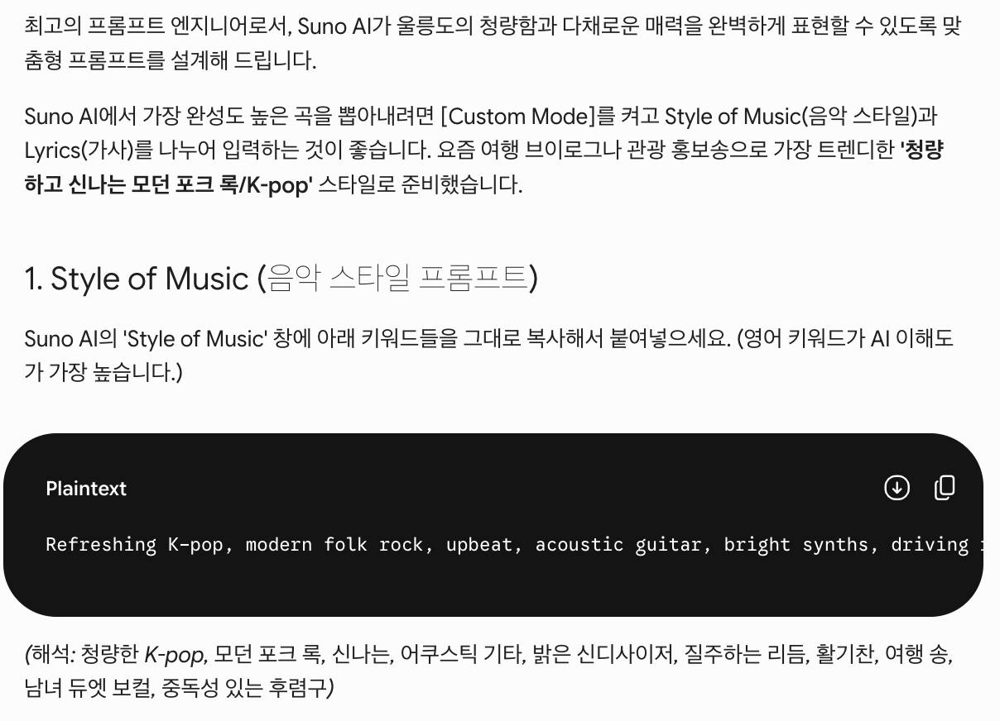
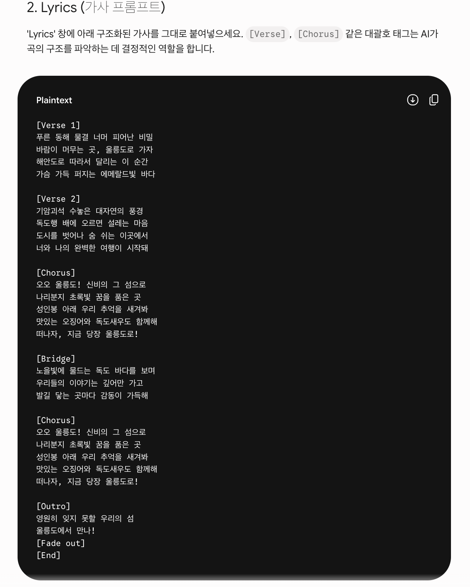
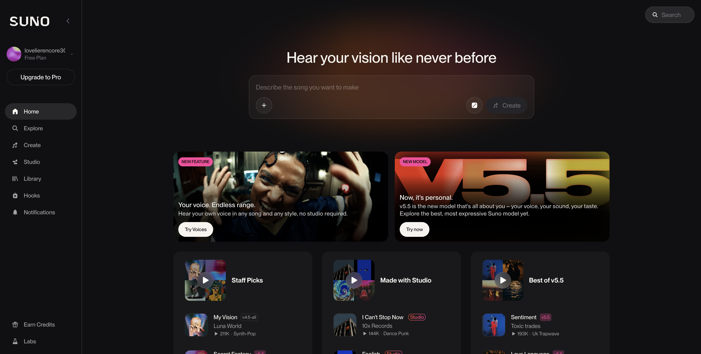

AI로 관광 홍보
콘텐츠 완성하기
생성형 AI 활용부터 웹페이지 제작까지
이 수업은 AI 도구 사용법을 외우는 시간이 아닙니다. 울릉군민이 내 가게·내 숙소·내 체험 프로그램·울릉도 관광자원을 더 잘 알리는 방법을 익히고, 하루 안에 홍보 콘텐츠와 웹페이지 초안까지 직접 만들어보는 실습형 교육입니다.

AI는 이제 ‘대답하는 도구’를 넘어
‘일을 처리하는 도구’로
먼저 “요즘 AI가 어디까지 왔는지” 큰 그림을 함께 봅니다. 겁먹을 필요는 없습니다. 중요한 건 이 변화를 울릉도 관광 홍보에 그대로 활용할 수 있다는 점입니다.
정부도 공개 전에 AI를 들여다보는 시대
AI가 글쓰기를 넘어 소프트웨어 개발·보안·복잡한 추론까지 하게 되면서, 미국·영국의 AI 안전 기관은 주요 모델을 공개 전에 평가하기 시작했습니다.
우리에게는? 무서워하기보다, 안전하고 똑똑하게 활용하는 법을 배우면 됩니다. 그래서 오늘은 사람이 확인·수정하는 법까지 함께 배웁니다.
AI가 컴퓨터를 직접 조작하는 시대
예전 AI는 질문에 답만 했습니다. 이제는 화면을 보고, 마우스를 움직이고, 버튼을 누르고, 자료를 찾아 정리하는 사람처럼 컴퓨터를 쓰는 단계로 갑니다.
이것이 바로 ‘에이전트 AI’입니다. 접속·검색·입력·정리·수정 같은 반복 작업을 대신 처리합니다.
AI가 AI를 조종하는 시대
이제 하나의 AI가 모든 걸 하지 않습니다. 글 작성 AI·리서치 AI·이미지 AI·번역 AI·웹페이지 제작 AI가 역할을 나눠 함께 일합니다.
오늘 흐름도 이것. Gemini로 글 → 리서치로 조사 → 이미지 → Codex로 웹페이지.
검색이 대화형으로 바뀌는 시대
관광객은 이제 “울릉도 맛집” 같은 단어 대신, 질문형·대화형으로 검색합니다.
그래서 홍보도 ‘예쁜 문구’보다 관광객 질문에 잘 답하는 콘텐츠가 중요해졌습니다.
문서를 팟캐스트처럼 읽어주는 시대
긴 자료를 넣으면 AI가 두 사람이 대화하듯 핵심을 풀어 설명해 줍니다. 관광 해설·발표 연습에 아주 유용합니다.
오늘 실습 3에서 NotebookLM으로 직접 만들어 들어봅니다.
AI가 외국어 장벽을 낮추는 시대
영어·일본어·중국어 안내문을 훨씬 쉽게 만들 수 있습니다. 특히 “따개비밥·오징어내장탕”처럼 번역만으로는 부족한 음식도, 재료·맛·특징을 함께 풀어 설명해 줍니다.
오늘 실습 2에서 다국어 안내문을 직접 만듭니다.
그래서 우리는 이런 것들을 만들 수 있습니다
AI를 활용하면 울릉군민도 직접 관광 홍보 콘텐츠를 만들 수 있습니다. 먼저 글·콘텐츠 계열부터 봅니다. 각 항목은 오늘 또는 돌아가서 바로 써먹을 수 있는 것들입니다.
🖋️관광 홍보 문구
- 울릉도 한 줄 소개, 계절별·대상별 카피
- 성인봉·행남해안산책로·봉래폭포 소개
- 도동항·저동항·사동항 주변 홍보
- 포스터·현수막·카드뉴스용 짧은 카피
📱SNS 홍보 콘텐츠
- 인스타그램 글, 블로그 후기형 글
- 카드뉴스 문구, 릴스·쇼츠 대본
- 해시태그 묶음, 카카오톡 홍보 메시지
- 축제·이벤트·체험 모집글
🖼️홍보 이미지·포스터
- 관광 포스터, SNS 썸네일, 블로그 대표 이미지
- 체험 프로그램·행사 홍보 이미지
- 카드뉴스 이미지 구성안
- 장면·분위기·색감·비율·문구를 구체적으로 지정
🔎블로그·검색 노출 콘텐츠
- 울릉도 여행 준비물, 2박3일 코스 글
- 성인봉 등산 후기형 글, 맛집·숙소 추천
- 제목·목차·본문 초안·해시태그 한 번에
- 관광객이 실제로 검색하는 키워드 반영
💬FAQ · 고객 응대 문구
- 배편·날씨·예약·결제·주차 FAQ
- 예약·취소·환불 안내 메시지
- 후기 요청·재방문 유도·감사 인사
- 카톡·문자·DM·네이버 톡톡에 바로 활용
⭐후기·리뷰 활용
- 고객 후기 요약, 홍보 포인트 추출
- 긍정 리뷰 답글·부정 리뷰 정중한 대응
- 후기 기반 홍보 문구·카드뉴스
- 부족한 점 분석으로 개선 방향 찾기
업종별·현장에서 바로 쓰는 것들
이번에는 업종·운영·웹페이지 계열입니다. 「오늘」 표시가 있는 항목은 오늘 실습에서 직접 만들어 봅니다.
🌐다국어 관광 안내문 오늘
- 관광지·메뉴·숙소·체험 안내문 번역(영·일·중)
- 주의사항·교통·예약 안내문 번역
- 외국인 FAQ, 지도용 영문 소개글
- 단순 번역이 아니라 관광객이 이해할 표현으로
🍽️식당 메뉴판·가격표
- 한·영·일 메뉴판, 메뉴별 한 줄 설명
- 알레르기 안내, 대표 메뉴 추천 문구
- 세트·계절 메뉴 구성, 디지털 메뉴판 텍스트
- 메뉴 이름·가격만 입력하면 나머지를 정리
🏡숙소·민박 홍보문
- 숙소 소개·객실 설명·주변 관광지 안내
- 예약·체크인·환불 규정 안내문
- 외국인 고객용 소개문
- 네이버 예약·블로그·SNS용 홍보글
🥾생태관광 체험 프로그램
- 성인봉 트레킹·해안 산책·약초 탐방·오징어잡이 소개
- 마을 해설·독도 연계·가족/학생 프로그램
- 대상·소요시간·참가비·준비물·난이도·주의사항 정리
- 새 체험 상품 아이디어 기획까지
🗺️관광 코스 추천
- 당일·1박2일·2박3일 코스
- 가족·등산·맛집·사진 명소 중심 코스
- 어르신도 부담 없는·비 오는 날 대체 코스
- 이동·식사·관광·휴식을 묶어 동선으로
📍지도·온라인 정보 정리
- 영문 상호명·영문 주소·대표 메뉴 영어 설명
- 지도 등록용 짧은 소개문, 영업·주차·예약 안내
- 외국인 고객용 설명문, 대표 키워드
- 인기 검색어·계절 키워드 조사(리서치)
🎓관광 해설·교육 자료
- 울릉도 자연·관광지 해설문, 해설 스크립트
- 어린이용 쉬운 설명, 외국인용 영어 해설
- 안전 안내·오리엔테이션·활동지·퀴즈
- 발표자료·한 장 요약·발표 대본
💻웹페이지 제작 오늘
- 관광지·식당·숙소·체험·마을 소개 페이지
- 예약 문의 폼·다국어 안내·메뉴판 페이지
- 히어로·이미지·카드·가격표·오시는 길·FAQ
- 말로 설명하면 브라우저에서 열리는 페이지로
여러 작업을 이어서 처리하기
이번 교육에서는 한 번 질문하고 끝내는 것을 넘어, AI가 여러 단계를 순서대로 이어서 도와주는 방식도 맛봅니다. 예를 들어 이런 흐름입니다.
그 많은 것 중, 오늘은 웹페이지 1개를 완성합니다
오늘의 주인공은 AI가 아니라 여러분의 가게·숙소·체험·관광지입니다. 앞에서 본 가능성 중, 오늘은 욕심내지 않고 내 주제 하나로 홍보 웹페이지를 끝까지 완성해 함께 나눕니다.
하나만 확실히
오늘은 내 주제 하나로 홍보 웹페이지 딱 1개를 끝까지 완성합니다. 나머지 활용법은 돌아가서 하나씩 해보면 됩니다.
재료 → 조립
AI로 글·번역·이미지 같은 재료를 먼저 만들고, 그 재료를 모아 웹페이지로 조립합니다.
함께 나누기
마지막에는 완성한 페이지를 1분씩 발표하고 서로의 아이디어를 나눕니다.
오늘 끝나면 이런 웹페이지가 손에 남습니다
설명보다 결과를 먼저 봅니다. 아래는 실제로 AI로 만든 울릉도 관광 소개 페이지입니다. 데스크톱과 휴대폰에서 어떻게 보이는지 확인해 보세요.
먼저, AI가 무엇인지부터 쉽게
복잡한 원리는 몰라도 됩니다. 딱 이 한 문장이면 충분합니다.
AI는 아주 많은 글과 그림, 정보를 미리 학습해 두었다가, 우리가 부탁하면 그에 맞는 글·번역·이미지·요약을 만들어 주는 프로그램입니다.
쉽게 비유하면
책을 아주 많이 읽은 똑똑한 신입 직원과 같습니다. 시키면 빠르게 초안을 만들어 주지만, 가끔 잘못 알기도 하므로 사람이 확인해야 합니다.
‘생성형 AI’란
요즘 AI는 대부분 ‘만들어 주는(생성)’ AI입니다. 글·이미지·번역·음성·웹페이지까지 결과물을 새로 만들어 줍니다. 오늘 쓰는 Gemini도 생성형 AI입니다.
오늘 우리가 AI에게 실제로 시킬 일은 여섯 가지입니다.
글쓰기
소개글·SNS 글·안내문·메뉴 설명을 초안으로 빠르게 만듭니다.
번역
영어·일본어 안내문, 외국인용 FAQ를 손쉽게 만듭니다.
이미지
홍보 포스터·SNS 썸네일·대표 이미지 아이디어를 만듭니다.
조사(리서치)
관광객 관점·검색 키워드·다른 지역 사례·사실 확인을 돕습니다.
웹페이지 제작
말로 설명하면 브라우저에서 열리는 소개 페이지로 만들어 줍니다.
검수
과장된 표현·틀린 정보·어색한 번역을 함께 점검합니다.
프롬프트는 AI에게 주는 ‘부탁 문장’입니다
AI를 잘 쓰는 사람은 컴퓨터를 잘하는 사람이 아니라 또박또박 부탁하는 사람입니다. 좋은 결과는 좋은 부탁에서 나옵니다.
🙁 아쉬운 부탁
→ 누구를 위해, 무엇을, 어떤 톤인지 알 수 없어 두루뭉술한 답이 나옵니다.
🙂 좋은 부탁
좋은 부탁에는 이 7가지가 들어갑니다. 하나씩 채워 보세요.
역할을 정해준다
대상을 정해준다
목적을 정해준다
형식을 정해준다
넣을 내용을 알려준다
하지 말 것도 알려준다
결과는 반드시 확인한다
“너는 ○○○ 전문가야” — 역할을 주면 답이 달라집니다
가장 쉽고 효과가 큰 기술입니다. AI에게 역할(페르소나)을 주면, 그 전문가처럼 말투·지식·관점으로 답합니다.
🙁 역할이 없으면
→ 밋밋하고 일반적인 설명이 나옵니다.
🙂 역할을 주면
→ 현지 전문가의 시선으로, 손님을 배려하는 톤이 됩니다.
상황별 역할 예시
- “너는 울릉도 관광 홍보 전문가야”
- “너는 친절한 영어 번역가야”
- “너는 메뉴판을 잘 만드는 디자이너야”
- “너는 초등학생도 이해하게 설명하는 해설사야”
역할 + 대상 + 목적
역할에 누구에게(대상)와 무엇을 위해(목적)를 더하면 훨씬 좋아집니다.
한 번에 끝내지 않습니다 — 대화하며 다듬기
AI는 대화를 기억합니다. 첫 답이 마음에 안 들어도 괜찮습니다. 이어서 고쳐 달라고 하면 점점 좋아집니다.
생성형 AI와 에이전트 AI, 무엇이 다를까요?
물어보면 만들어 줍니다
내가 하나 물으면, 하나를 만들어 줍니다.
여러 단계를 이어서 처리합니다
목표만 주면, 여러 일을 순서대로 스스로 해냅니다.
에이전트 AI, 이렇게 시킵니다
비결은 간단합니다. 큰 목표를 주고, 할 일을 번호로 나눠 순서대로 시키면 됩니다. 오늘 웹페이지를 만드는 Codex도 이 방식으로 도와줍니다.
아래 다섯 단계를 한 대화에서 이어서 시켜보세요. 앞 단계 결과를 AI가 기억하고 다음에 씁니다.
조사
울릉도 관광 홍보에 필요한 검색 키워드를 조사한다고 가정하고,
관광객이 검색할 만한 키워드 20개를 추천해줘.
국내 관광객과 외국인 관광객을 나누어 정리해줘.정리
위 키워드를 바탕으로 울릉도 관광 홍보에서
강조해야 할 포인트 5가지를 정리해줘.콘텐츠 만들기
위 홍보 포인트를 바탕으로 인스타그램 게시글 3개와
블로그 제목 5개를 만들어줘.번역
위 인스타그램 게시글 중 1개를
영어와 일본어로 자연스럽게 번역해줘.웹페이지 구성
지금까지 만든 내용을 바탕으로 울릉도 생태관광 홍보
웹페이지 구조를 만들어줘. 첫 화면, 프로그램 소개,
추천 코스, FAQ, 예약 문의 섹션을 포함해줘.그래서, 지금 뭘 켜면 되나요?
AI가 좋다는 건 알겠는데, 막상 어떤 걸 열어야 할지 막막합니다. 도구마다 잘하는 일이 조금씩 다릅니다. 아래 도구들은 모두 무료로 시작할 수 있습니다.
💬ChatGPT 가장 범용적인 AI 비서
글쓰기·요약·번역·자료 분석·아이디어 정리까지 두루. 처음 AI를 접할 때 가장 쉽게 시작하기 좋습니다.
- 관광 홍보 문구·블로그·SNS 글 초안
- 영어·일본어 안내문, 메뉴 설명
- 관광객 FAQ, 파일·이미지 읽고 정리
✨Gemini 구글 서비스와 잘 연결
검색 기반 조사·번역·이미지 아이디어에 강점. 관광 키워드와 검색 노출을 고려한 문구에 좋습니다.
- 울릉도 관광 키워드·경쟁 지역 조사
- 영어·일본어 번역, 지도용 영문 소개
- 이미지 생성용 프롬프트 만들기
📝Claude 긴 글·자료 정리에 강함
긴 문서·발표자료·웹페이지 원고를 체계적으로 구조화하는 데 강합니다. 결과를 보기 좋게 확인하는 기능도 있습니다.
- 체험 프로그램 소개문·관광 해설 스크립트
- 발표자료 원고·수업자료 목차
- 웹페이지 문안 정리, HTML 초안
🧑💻Codex 웹페이지·코드 제작 도움
코딩을 잘 몰라도 웹페이지 제작·수정을 도와주는 AI 코딩 도구. “글 → 웹페이지” 단계를 보여주기 좋습니다.
- HTML 웹페이지 초안 만들기·수정
- 버튼 색·FAQ 아코디언·모바일 반응형
- 오류 메시지 해석, 코드 쉽게 설명받기
🤖GitHub Copilot 개발자용 코드 보조
웹페이지·앱을 만들 때 코드 작성·수정·디버깅을 돕습니다. 더 해보고 싶은 분을 위한 다음 단계입니다.
- HTML/CSS 코드 추천·UI 코드 만들기
- 기존 코드 일부 수정, 기능 추가
- 오류 설명, 코드 의미 설명받기
🎧NotebookLM 자료를 넣고 쉽게 이해
긴 자료를 넣으면 요약·질문답변·오디오 설명으로 바꿔 줍니다. 해설·교육·발표 준비에 유용합니다.
- 관광 해설·교육자료 요약
- 체험 안내문 정리, 질문답변 만들기
- 오디오 요약으로 발표 연습
| 도구 | 초보자 추천 | 주로 쓰는 일 | 울릉도 관광 활용 |
|---|---|---|---|
| ChatGPT | 매우 높음 | 글쓰기·요약·번역·아이디어 | SNS 글, FAQ, 고객 응대, 관광 소개문 |
| Gemini | 높음 | 검색 기반 조사·번역·이미지 아이디어 | 관광 키워드, 외국인 안내문, 홍보 문구 |
| Claude | 높음 | 긴 문서·발표자료·웹페이지 원고 | 수업자료, 체험 소개, 페이지 원고 |
| Codex | 중간 | 웹페이지·코드 제작 | HTML 페이지 만들기, 기능 수정 |
| GitHub Copilot | 중간 | 개발자용 코드 보조 | 웹페이지 코드 수정, 디버깅 |
| NotebookLM | 높음 | 자료 요약·학습·오디오 설명 | 관광 해설·교육자료 요약 |
먼저 내 정보를 한 번만 적어둡니다
여기 적어두면, 아래 실습의 “내 정보 넣어서 복사” 버튼이 프롬프트를 자동으로 완성해 줍니다. 모르는 칸은 비워도 됩니다.
Gemini로 관광 홍보 문구 만들기
가장 먼저 웹페이지에 들어갈 글 재료를 만듭니다. 여기서 나온 제목·한 줄 소개·SNS 글은 나중에 웹페이지에 그대로 씁니다.
소개글·SNS·FAQ 한 번에
너는 울릉도 관광 홍보 전문가야.
아래 정보로 우리 가게 홍보자료를 만들어줘.
[내 정보]
- 이름: [가게/숙소/프로그램 이름]
- 종류: [식당/숙소/체험/관광지/특산품]
- 위치: [위치]
- 대표 메뉴/서비스: [대표 메뉴·객실·체험·가격]
- 장점: [강조하고 싶은 특징]
- 문의: [전화번호 또는 문의 방법]
[만들어줄 것]
1. 큰 제목 5개
2. 한 줄 소개 5개
3. 인스타그램 글 1개 (해시태그 10개 포함)
4. 자주 묻는 질문 5개와 답변
조건: 중학생도 이해하게 쉽게 / 과장 없이 /
가격·시간·배편처럼 확인이 필요한 정보는 "확인 필요"로 표시
#울릉도맛집 #도동항 #따개비밥 #오징어내장탕 #울릉도여행 #울릉도맛집추천 #동해바다 #가족여행 #울릉도식당 #바다뷰맛집
외국인도 이해하는 글로벌 콘텐츠 만들기
울릉도는 외국인 관광객도 늘고 있습니다. 영어·일본어 안내문과, 문화가 달라도 헷갈리지 않는 쉬운 표현을 만들어 둡니다.

영어·일본어 안내문 + 외국인 FAQ
우리 가게를 처음 방문하는 외국인 관광객을 위한
영어와 일본어 안내문을 만들어줘.
[내 정보]
- 이름 / 종류 / 위치 / 대표 메뉴 / 문의
[만들어줄 것]
1. 영어 안내 3줄 (짧고 쉬운 문장)
2. 일본어 안내 3줄
3. 대표 메뉴를 외국인이 이해하도록 재료·맛과 함께 설명
4. 외국인이 자주 묻는 질문 3개와 답 (영어)
조건:
- 어려운 단어 대신 쉬운 표현으로
- 예약·결제 방법·알레르기 정보를 분명하게
- 문화가 달라도 오해 없게 정중하게
Signature dishes: barnacle rice & squid soup with fresh local catch.
Ocean-view seats available — reservation recommended (card payment OK).
글을 넘어 음성·음악으로도 알립니다
홍보는 글만이 아닙니다. 자료를 넣으면 대화형 음성 소개가 되고, 짧은 홍보 노래도 만들 수 있습니다. 아래는 실제로 만든 예시입니다 — 직접 재생해 보세요.
이렇게 만듭니다
실제로 만든 음성
관광 해설자료·체험 안내문을 넣으면, 귀로 들으며 발표·해설 연습에도 쓸 수 있습니다.
Gemini로 노래 설계(Style + Lyrics)를 받아 Suno의 Custom 모드에 나누어 붙여넣으면, 짧은 홍보 노래가 만들어집니다.
Refreshing K-pop, modern folk rock, upbeat, acoustic guitar, bright synths, driving rhythm, cheerful, energetic, travel song, male/female duet vocals, catchy chorus[Chorus]
오오 울릉도! 신비의 그 섬으로
나리분지 초록빛 꿈을 품은 곳
성인봉 아래 우리 추억을 새겨봐
맛있는 오징어와 독도새우도 함께해
떠나자, 지금 당장 울릉도로!



내 주제를 정하고 정보를 보강합니다
점심 후, 오늘 만들 웹페이지의 주제 하나를 정합니다. 그리고 AI 리서치로 관광객이 궁금해할 정보와 사실 확인 목록을 뽑습니다.

관광객 관점 + 사실 확인 목록
울릉도 [내 주제] 홍보 웹페이지를 만들려고 해.
아래를 표로 정리해줘.
1. 관광객이 방문 전에 가장 궁금해하는 것 7가지
2. 사람들이 많이 쓰는 검색 키워드 10개
3. 다른 인기 관광지 소개 페이지에서 배울 점 3가지
4. 내가 반드시 사실 확인해야 할 항목
(가격·운영시간·배편·전화·주소 등)
확인이 필요한 정보는 "확인 필요"로 표시하고,
과장하지 말고 사실 위주로 정리해줘.
이제 웹페이지를 직접 만듭니다
오늘 만든 글·번역·이미지·리서치를 모아, Codex에게 웹페이지를 만들게 합니다. 코딩을 몰라도 됩니다 — 원하는 화면을 말로 설명하면 Codex가 코드를 대신 만들어 줍니다.
웹페이지 만들기 프롬프트
울릉도 [내 주제] 홍보 웹페이지를 만들어줘.
- 한 파일(index.html), 서버 없이 브라우저에서 열리게
- 모바일에서도 글자·버튼이 겹치지 않게
[기본 정보] 이름/종류/위치/대표 메뉴·서비스/장점/문의/한 줄 소개
[페이지 구성]
1. 히어로: 큰 제목, 한 줄 소개, 대표 이미지, 문의 버튼
2. 코스/이용 안내 카드 3개
3. 대표 음식·체험 소개 3~5개
4. 외국인 안내 3줄
5. 자주 묻는 질문 5개
6. 오시는 길(지도 링크 버튼)과 문의
[디자인] 울릉도 바다색 + 레드오렌지 포인트, 큰 글씨, 모바일 우선
[주의] 미확인 가격·배편·운영시간은 "확인 필요"로 표시
수정 프롬프트
방금 만든 웹페이지에서
- 제목을 더 크게
- 문의 버튼을 레드오렌지(#EA580C)로, 항상 잘 보이게
- 대표 음식 카드에 사진 자리를 추가
- 휴대폰 화면에서 글자가 겹치지 않게
다른 내용은 그대로 두고 이 부분만 고쳐줘.
Codex 같은 도구로 “AI는 이런 것도 만든다”를 보여주는 짧은 데모도 가능하지만, 오늘의 핵심은 내 홍보 웹페이지 완성입니다.
완성하면 이런 모습이 됩니다
데스크톱과 휴대폰 모두에서 자연스럽게 보이는지 함께 확인합니다.
이 항목이 다 있으면 완성입니다
하나씩 눌러 확인하세요. 체크 상태는 이 브라우저에 저장됩니다.
기준은 딱 하나 — “관광객에게 보여줘도 될까?”
AI는 초안을 빠르게 만들어주지만, 최종 확인과 책임은 사람에게 있습니다. 공개 전에 아래를 함께 점검합니다.
사람이 꼭 확인할 것
- 가격 · 운영시간 · 배편 · 전화 · 주소
- 과장된 표현은 없는지
- 외국어 문장이 어색하지 않은지
- 사진 사용 권리 · 개인정보 노출
- 안전 안내 · 행정/법률 정보
AI에게 점검 부탁하기
이 웹페이지를 관광객에게 공개하기 전에 점검해줘.
- 가격·운영시간·배편·전화·주소가 틀릴 가능성
- 너무 과장된 표현
- 외국어 번역이 어색한 부분
- 모바일에서 겹치는 부분
표로 정리하고, 내가 직접 확인할 항목을 따로 표시해줘.
완성한 페이지를 1분씩 나눕니다
잘 만드는 것보다 끝까지 만들어 보는 것이 중요합니다. 아래 순서대로 1분만 이야기하면 충분합니다.
내 주제와 대상
무엇을(식당/숙소/체험/관광지/특산품), 누구를 위해 만들었나요?
사용한 프롬프트
가장 도움이 된 부탁 문장 한두 개를 소개합니다.
완성 페이지 시연
브라우저에서 페이지를 열어 핵심 화면을 보여줍니다.
다음에 혼자 쓰는 법
현장에 어떻게 적용할지, 무엇부터 해볼지 한 줄로 정리합니다.
집에서도 그대로 쓸 수 있어요
오늘, 여러분은 직접 만들었습니다
울릉도 생태관광 홍보 웹페이지를 처음부터 끝까지 스스로 완성했습니다. AI는 거들었을 뿐, 콘텐츠의 주인은 여러분입니다. 오늘 배운 방법은 내일도, 다음 달에도 그대로 쓸 수 있습니다.